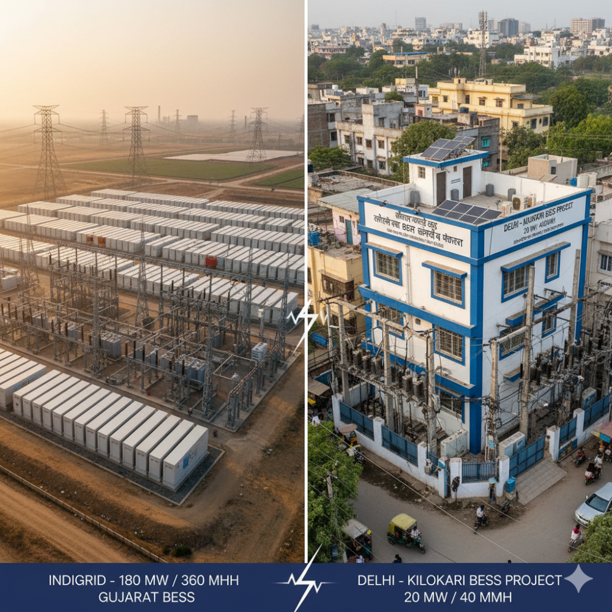
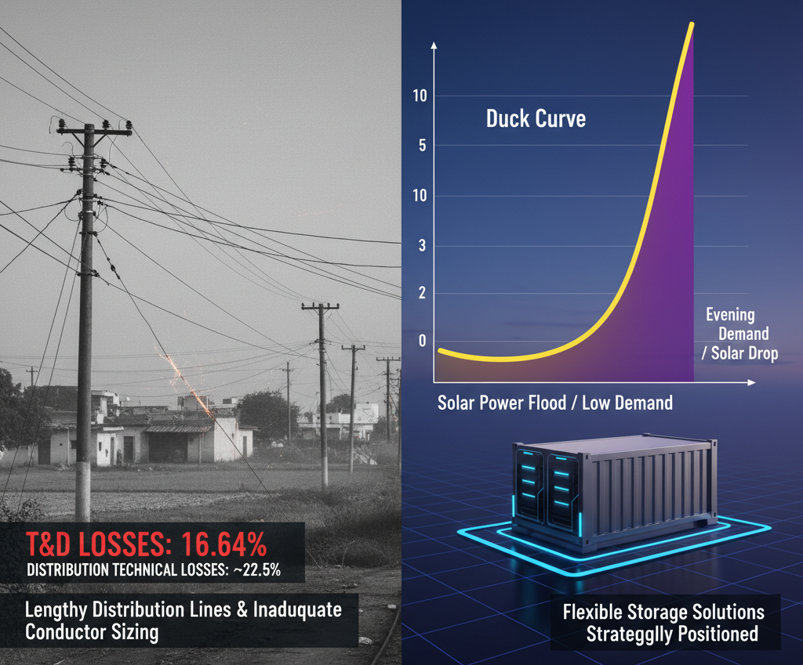
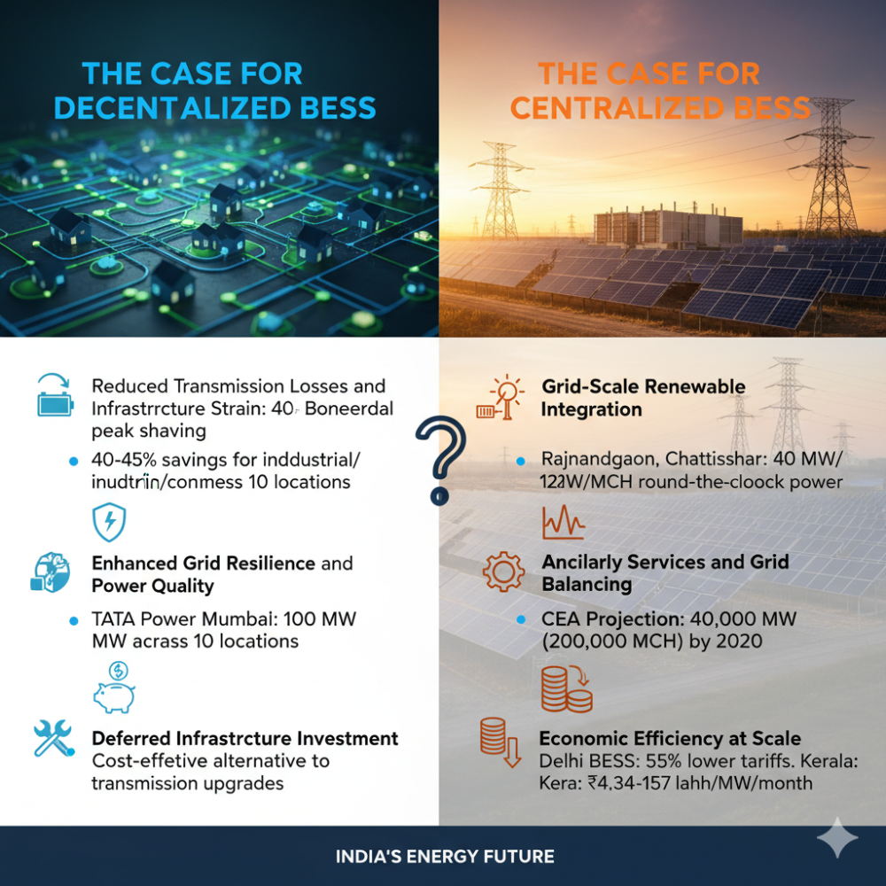
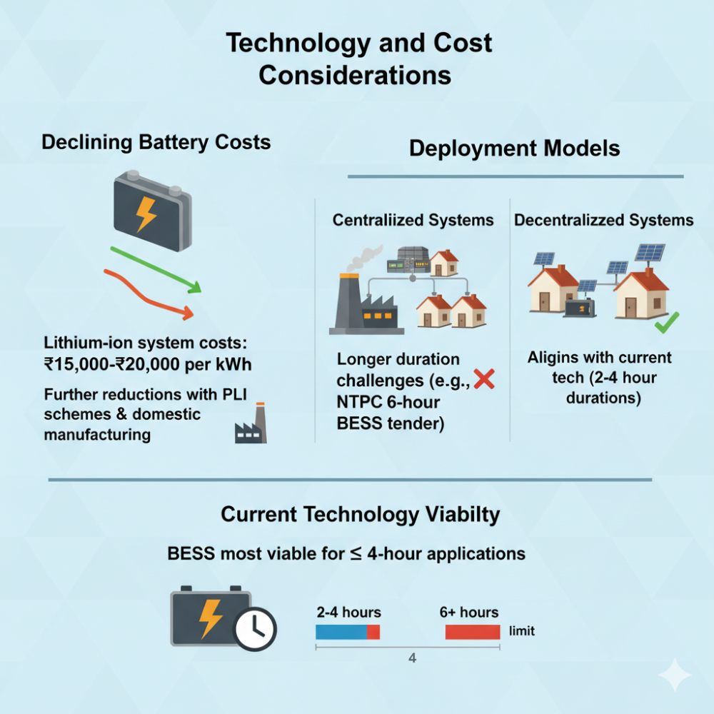
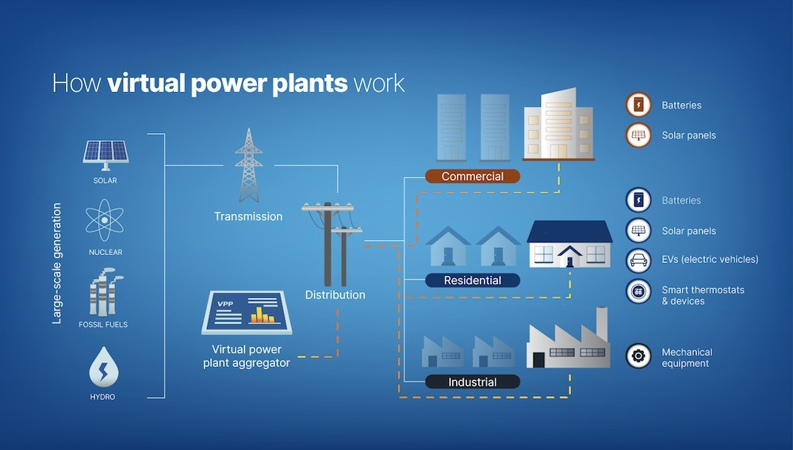

India's ambitious renewable energy targets and the evolving structure of its power system have brought battery energy storage systems (BESS) to the forefront of energy infrastructure planning. As the country moves toward deploying 47 GW of BESS capacity by 2032, a critical strategic question emerges: should India prioritize decentralized or centralized BESS deployment? The answer lies in understanding the unique characteristics of India's grid, its operational challenges, and the distinct advantages each approach offers.
Understanding the Two Approaches
Centralized BESS refers to large-scale, utility-owned storage systems typically connected at the transmission level, ranging from 100 MW to several GW capacity. These systems serve broad grid functions such as bulk energy storage, frequency regulation, and transmission support. India's recent developments include the 180 MW/360 MWh standalone BESS project in Gujarat by IndiGrid and the 2.1 GW BESS project in Madhya Pradesh by Avaada.
Decentralized BESS, in contrast, comprises smaller systems deployed at the distribution level, closer to load centers. These range from rooftop-level installations to community-scale systems of 10-50 MW, integrated into existing distribution infrastructure. Delhi's pioneering 20 MW/40 MWh Kilokari BESS project exemplifies this approach, being India's first commercial distribution-level BESS.

India's Grid Challenges Favor a Hybrid Approach
India's power sector faces multiple challenges that influence the optimal BESS deployment strategy. The country experiences some of the world's highest transmission and distribution losses, with T&D losses reaching 16.64% of total electricity generation. These losses are particularly acute in distribution networks, where technical losses alone account for approximately 22.5%, primarily due to lengthy distribution lines and inadequate conductor sizing.
The duck curve phenomenon has begun manifesting in high renewable penetration states. Solar power floods the grid during midday hours when demand is relatively low, creating an evening surge when solar generation drops but household and commercial demand peaks. This mismatch requires flexible storage solutions positioned strategically across the grid.

The Case for Decentralized BESS
Decentralized BESS offers compelling advantages for India's specific grid conditions:
Reduced Transmission Losses and Infrastructure Strain: By storing energy closer to consumption centers, decentralized systems significantly reduce the need to transport electricity over long distances. This approach directly addresses India's T&D loss problem, potentially saving billions in wasted energy. For industrial and commercial consumers, decentralized BESS enables peak shaving and demand charge reduction, with potential savings of 40-45% through time-of-day tariff optimization.
Enhanced Grid Resilience and Power Quality: Distribution-level BESS provides immediate voltage and frequency support to local networks. This is particularly valuable in India, where power quality issues and grid instability affect industrial operations. The TATA Power Mumbai initiative, deploying 100 MW BESS across 10 strategic locations, demonstrates how distributed deployment can address multiple grid challenges simultaneously.
Deferred Infrastructure Investment: Rather than investing millions in transmission upgrades, utilities can deploy distributed storage at congestion points as a cost-effective alternative. This approach allows DISCOMs to manage peak loads more efficiently while deferring expensive grid expansion projects.

The Case for Centralized BESS
Large-scale centralized systems offer distinct benefits for India's evolving energy landscape:
Grid-Scale Renewable Integration: Centralized BESS excels at managing the intermittency of large renewable projects. The Rajnandgaon project in Chhattisgarh (40 MW/120 MWh) demonstrates how utility-scale storage can integrate with solar installations to provide round-the-clock power delivery. These systems can store excess renewable generation during peak production hours and discharge during high-demand periods.
Ancillary Services and Grid Balancing: Large BESS installations provide essential grid services including frequency regulation, secondary and tertiary reserves, and black-start capabilities. The Central Electricity Authority's projection of 40,000 MW (200,000 MWh) of BESS by 2030 reflects the system-wide need for these services as renewable penetration increases.
Economic Efficiency at Scale: Centralized systems benefit from economies of scale, with recent tariff discoveries showing significant cost reductions. The Delhi BESS project achieved tariffs 55% lower than previous benchmarks, while Kerala's recent approvals show tariffs ranging from ₹4.34 lakh to ₹4.57 lakh per MW per month.

Regulatory Framework Supporting Both Approaches
India's policy landscape increasingly supports both centralized and decentralized BESS deployment. The Ministry of Power Govt of India 2025 guidelines allow states to develop standalone BESS with flexible 2-hour or 4-hour configurations, providing operational flexibility for different use cases.
State electricity regulatory commissions are establishing tariff mechanisms for BESS participation in energy markets. The exemption from Inter-State Transmission System (ISTS) charges for co-located BESS projects incentivizes large-scale deployment, while distribution-level regulations support smaller installations.

Technology and Cost Considerations
The declining cost of battery technology supports both deployment models. Current lithium-ion system costs range from ₹15,000-₹20,000 per kWh, with further reductions expected as domestic manufacturing scales up under Production Linked Incentive (PLI) schemes.
However, centralized systems face challenges with longer-duration applications. The NTPC tender requiring 6-hour BESS solutions highlights technical constraints, as BESS remains most viable for 4-hour applications or less. Decentralized systems, typically requiring 2-4 hour durations, align better with current technology capabilities.

Strategic Recommendations for India
India's optimal BESS strategy should embrace a hybrid approach that leverages the strengths of both centralized and decentralized deployment:
Near-term Priority: Distribution-Level BESS: Given India's high T&D losses and growing C&I energy demand, decentralized BESS should receive immediate priority. These systems provide immediate value through peak shaving, power quality improvement, and grid loss reduction. The success of pilot projects like Delhi's Kilokari BESS provides a replicable template for state utilities.
Long-term Integration: Transmission-Level BESS: As renewable capacity scales beyond 500 GW by 2030, large centralized systems become essential for bulk energy management and grid stability services. These installations should focus on high renewable penetration corridors and major load centers.
Virtual Power Plant Development
The ultimate potential lies in aggregating distributed BESS into virtual power plants (VPPs), creating grid-scale services from distributed assets. This approach maximizes both local benefits and system-wide value, representing the evolution toward a truly smart grid.

India's BESS deployment strategy must balance immediate grid challenges with long-term energy transition goals. While centralized systems offer scale advantages for renewable integration, decentralized BESS provides more immediate value through loss reduction, grid resilience, and customer benefits. The path forward involves strategic deployment of both approaches, with regulatory frameworks that recognize and monetize the unique value propositions each model provides. As India advances toward its 2032 target of 47 GW BESS capacity, success will depend on optimizing the mix between centralized and decentralized systems to match regional grid characteristics and market needs.